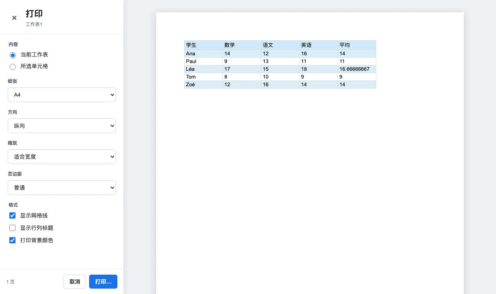

打印
文件 › 打印… 或 Ctrl P 按打印效果显示页面。

| 设置 | 选项 |
|---|---|
| 内容 | 当前工作表，或打开窗口前选择的单元格 |
| 纸张 | A4、Letter |
| 方向 | 纵向、横向 |
| 缩放 | 实际大小；适合宽度：所有列在一页宽度内；适合一页 |
| 页边距 | 普通、窄、宽 |
| 格式 | 网格线、行列标、填充颜色 |
打印… 打开浏览器的窗口，可选择打印机或保存为 PDF。
- 只打印单元格及其格式：不打印图表、图片和迷你图。
- 隐藏的行和列不打印。
- 复选框打印为 TRUE 或 FALSE。
- 每次打印一张工作表。
要连同图表一起打印，请保存工作簿并用 Excel 或 LibreOffice 打开。